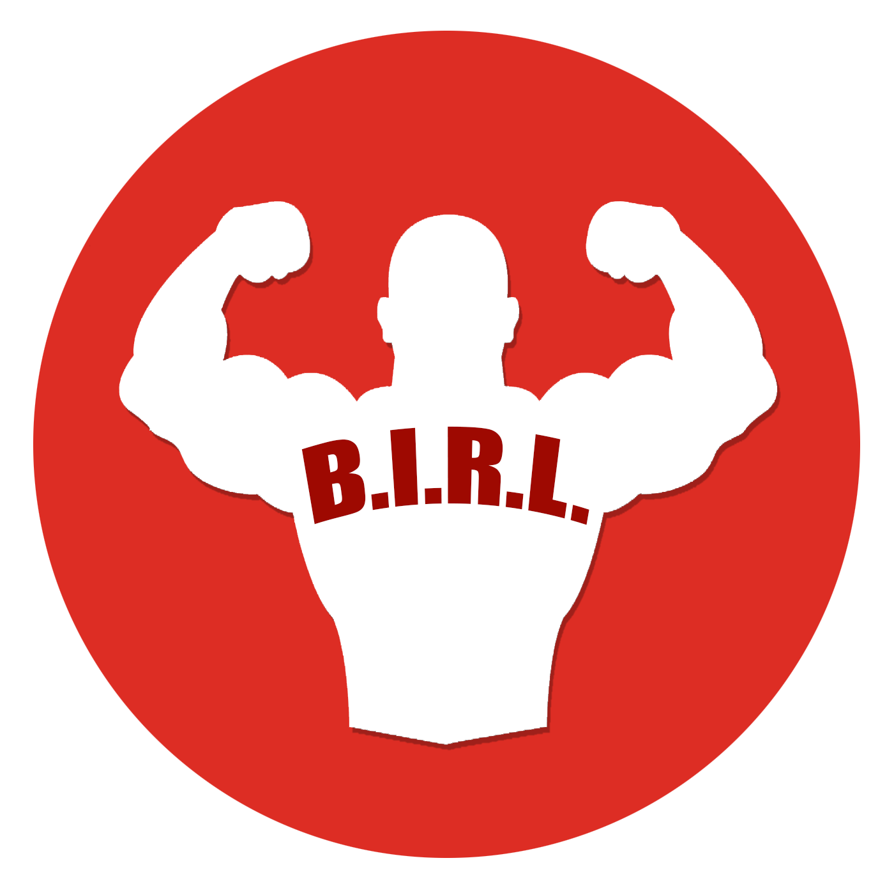
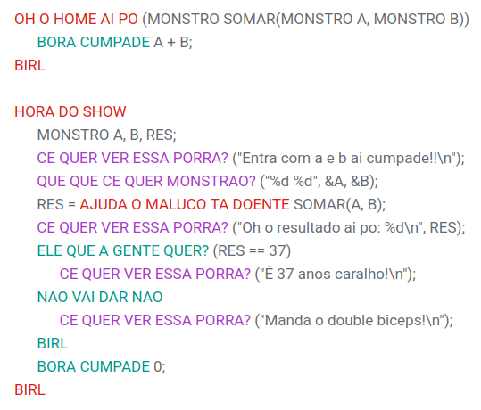

BIRL, QUE DHIABO É ISSO?

A Linguagem B.I.R.L. (Bambam's "It's show time" Recursive Language) é uma linguagem de programação bem-humorada e criativa, feita para programadores que querem aprender conceitos de código de forma divertida. Com tipos de dados e comandos inspirados em gírias e memes, ela transforma estruturas clássicas como if, for e while em expressões como “ELE QUE A GENTE QUER?”, “MAIS QUERO MAIS” e “NEGATIVA BAMBAM”. Mesmo sendo “treze”, a linguagem consegue ensinar lógica de programação com estilo e personalidade.
Além disso, o B.I.R.L. combina multimídia e interatividade, permitindo que o programador use entradas e saídas de forma dinâmica, sempre mantendo o humor e a criatividade no centro. Funções, loops e condicionais ganham nomes inusitados, enquanto a execução de código é marcada por comandos como “HORA DO SHOW” e encerrada com “BIRL”. É uma linguagem que prova que programar pode ser sério, mas também extremamente divertido e visual.
